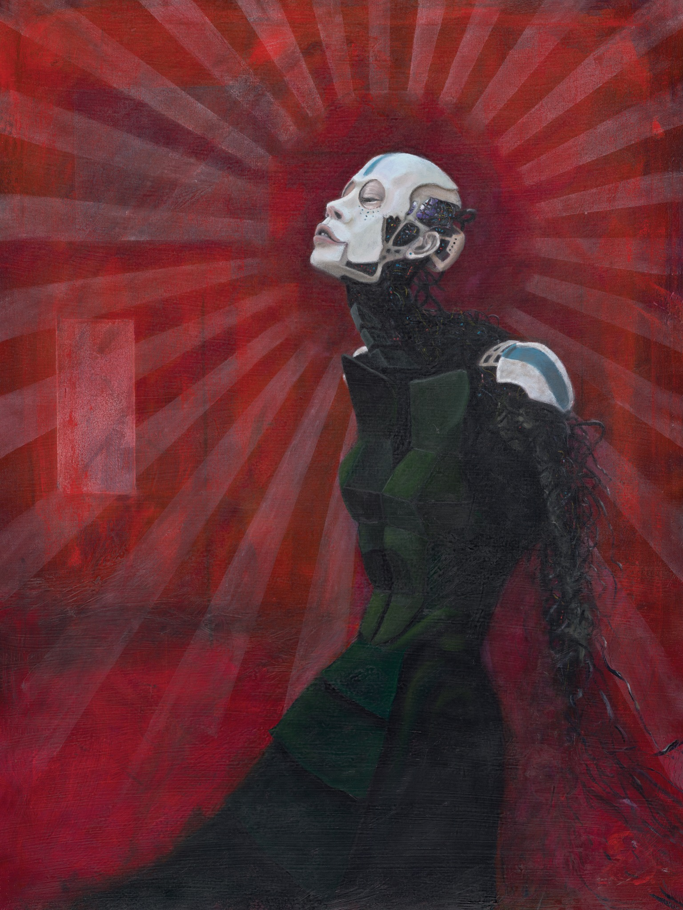

Echo in Red
36" x 36" Oil on canvas
36" x 36" Oil on canvas

Laugh and the World Laughs at You
30" x 40" Oil on panel
30" x 40" Oil on panel

Mourning Star
24" x 30" Oil on canvas
24" x 30" Oil on canvas